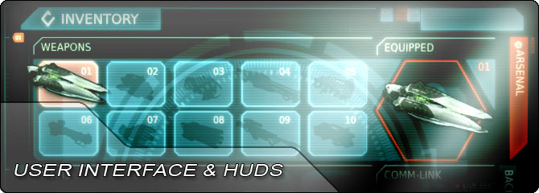

UDN
Search public documentation:
UIAndHUDHome
日本語訳
中国翻译
한국어
Interested in the Unreal Engine?
Visit the Unreal Technology site.
Looking for jobs and company info?
Check out the Epic games site.
Questions about support via UDN?
Contact the UDN Staff
中国翻译
한국어
Interested in the Unreal Engine?
Visit the Unreal Technology site.
Looking for jobs and company info?
Check out the Epic games site.
Questions about support via UDN?
Contact the UDN Staff
UE3 Home > User Interfaces & HUDs
User Interfaces & HUDs

The way in which the game communicates and interacts with the player is extremely important. User interfaces (UIs) and heads-up displays (HUDs) are the games way of providing information about the game to the player and in some cases allowing the player to interact with the game.
Unreal Engine 3 provides multiple means of creating UIs and HUDs. The Canvas class can be used to draw directly to the screen at a low level, overlayed onto the world. Scaleform GFx is also integrated into the engine and provides a complete menu and HUD solution using professional-grade tools such as Adobe Flash Professional. For mobile games, there is also a mobile menu system built on top of the Canvas functionality that provides the ability to create menus using touch input.
- Getting Started: Gameplay Elements - Intro to adding new gameplay elements in Unreal Engine 3.
General
- ScaleForm GFx - Overview of the Scaleform GFx integration in UE3.
- Setting Up Scaleform GFx - Setting up Scaleform for UE3 in Adobe Flash Professional
- Scaleform Quick Start - Creating a basic Scaleform UI for Unreal Engine 3.
- Scaleform Workflow - Workflow tips for creating Scaleform UIs for UE3.
- Scaleform Terminology - Commonly used terms and concepts for Scaleform and Flash.
- Scaleform Technical Guide - Guide to working with and controlling Scaleform through code in Unreal Engine 3.
- Scaleform Content Guide - Guide to creating and setting up Scaleform UIs for use in Unreal Engine 3.
- Scaleform GFx Import Pipeline - Guide to importing Flash scenes and content for Scaleform UIs into UE3.
- Scaleform GFx Content Best Practices - Tips and tricks on how to optimize content with Scaleform and UE3.
- HUD Technical Guide - Guide to creating heads-up displays in UE3.
- Canvas Technical Guide - Guide to using the Canvas object to draw to the screen.
- Mobile Menu Technical Guide - Guide to using the mobile menu system for touch interfaces.
- UI Data Store System - Guide to creating and using datastores for UIs.
- Creating and Importing Fonts - How to import true type fonts for use in UE3.
- Actor Selection Boxes - Rendering selection boxes around an actor on screen.
- Creating a Mouse Interface - Adding a visible mouse cursor that interacts with the game.